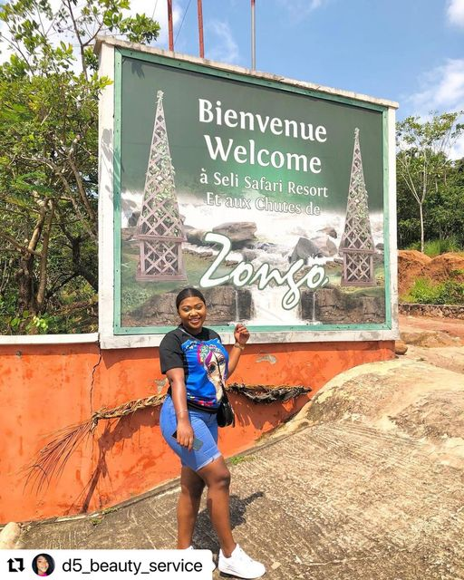
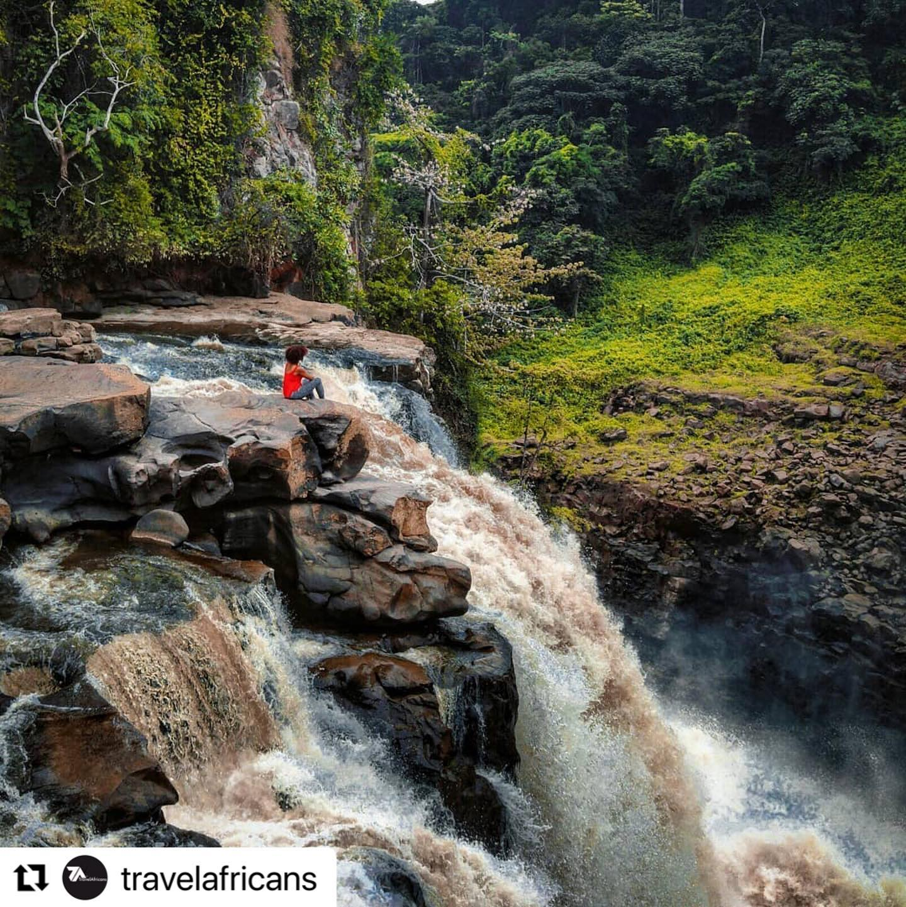
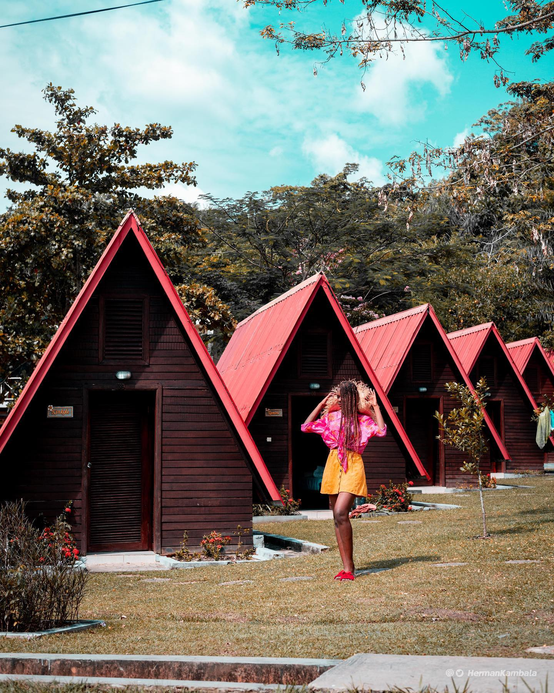

Adventure Awaits!
Zongo Falls is a breathtaking natural wonder located just outside Kinshasa, the capital city of the Democratic Republic of Congo. Despite the need for a somewhat costly 4WD hire (US$200) to reach this destination, it remains a popular day trip for locals and tourists alike. Standing at an impressive height of 65 meters, Zongo Falls is renowned as one of the most spectacular sights in the country. To reach the viewpoints overlooking the falls, visitors should be prepared for a bit of hiking and should wear appropriate shoes that can handle muddy terrain. However, the effort is well worth it, as witnessing the water cascade over the precipice and into the river below is an unforgettable experience. For those who wish to extend their visit, the Seli Safari Resort is available at the falls. This resort offers the opportunity to enjoy a delicious lunch or even stay overnight, allowing visitors to immerse themselves fully in the beauty of the surroundings. Located approximately 130 kilometers away from Kinshasa, reaching Zongo Falls requires a four-hour journey each way. Despite the distance, the awe-inspiring sight of the falls and the chance to connect with nature make it a must-see destination for anyone visiting Kinshasa and seeking a memorable adventure.
Welcome
Fun
Stay
Business Spotlights
Current Events
Find Your FunThe current temperature in Zongo Kinshasa is